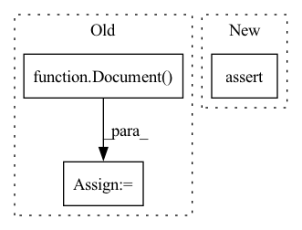

Pattern ID :32685

Before Change
def test_tokenizer(self, inputs, results):
pytest.importorskip("sacremoses")
t = MosesTokenizer()
input_doc = Document(original=inputs)
doc = Document(original=inputs, cleaned=inputs, phrases=[inputs])
doc.tokens = [[Token(original=token) for token in results]]
After Change
// Inplace True
out = t(doc, True)
assert doc.tokens == [Token(token) for token in results]
assert doc.steps == [repr(t)]
assert out is None
In pattern: SUPERPATTERN
Frequency: 3
Non-data size: 3
Instances
Fragment ID: 95078242
Project Name: tomassosorio/nlpiper
Commit Name: 87be30421eaa573801c99b1eb3937e410aedb43a
Time: 2021-04-12
Author: FerrariDG@users.noreply.github.com
File Name: tests/transformers/test_tokenizers.py
M Class Name: TestMosesTokenizer
N Class Name: TestMosesTokenizer
M Method Name: test_tokenizer(3)
N Method Name: test_tokenizer(3)
M Parent Class:
N Parent Class:
M File Name: tests/transformers/test_tokenizers.py
N File Name: tests/transformers/test_tokenizers.py
M Start Line: 50
M End Line: 62
N Start Line: 84
N End Line: 100
'>
Before Change
])
def test_tokenizer(self, inputs, results):
t = BasicTokenizer()
input_doc = Document(original=inputs)
doc = Document(original=inputs, cleaned=inputs, phrases=[inputs])
doc.tokens = [[Token(original=token) for token in results]]
After Change
// Inplace False
out = t(doc)
assert out.tokens == [Token(token) for token in results]
assert out.steps == [repr(t)]
assert doc.tokens is None
assert doc.steps == []
'>
Fragment ID: 95078243
Project Name: tomassosorio/nlpiper
Commit Name: 87be30421eaa573801c99b1eb3937e410aedb43a
Time: 2021-04-12
Author: FerrariDG@users.noreply.github.com
File Name: tests/transformers/test_tokenizers.py
M Class Name: TestBasicTokenizer
N Class Name: TestBasicTokenizer
M Method Name: test_tokenizer(3)
N Method Name: test_tokenizer(3)
M Parent Class:
N Parent Class:
M File Name: tests/transformers/test_tokenizers.py
N File Name: tests/transformers/test_tokenizers.py
M Start Line: 28
M End Line: 31
N Start Line: 57
N End Line: 73
'>
Before Change
time.sleep(20)
logger.info("rolling update done in process")
// add query testing
query_doc = Document()
query_doc.text = "hello world"
response = _query_docs([query_doc.dict()])
matches = response["search"]["docs"][0].get("matches")
logger.info(f"got {len(matches)} matches")
After Change
from app import create_flows, dump_and_roll_update
jinad_client = JinaDClient(host=HOST, port=JINAD_PORT)
assert jinad_client.alive, "cannot reach jinad"
dbms_flow_id, query_flow_id, workspace_id = create_flows()
// start rolling update in the background
'>
Fragment ID: 95078241
Project Name: jina-ai/examples
Commit Name: c3ea2eddcc58117b3f28c34ca861e6fd2a341efb
Time: 2021-09-02
Author: deepankar.mahapatro@jina.ai
File Name: wikipedia-sentences-query-while-indexing/tests/test_query_while_indexing.py
M Class Name: AnonimousClass
N Class Name: AnonimousClass
M Method Name: test_query_while_indexing(0)
N Method Name: test_query_while_indexing(0)
M Parent Class:
N Parent Class:
M File Name: wikipedia-sentences-query-while-indexing/tests/test_query_while_indexing.py
N File Name: wikipedia-sentences-query-while-indexing/tests/test_query_while_indexing.py
M Start Line: 30
M End Line: 52
N Start Line: 42
N End Line: 68